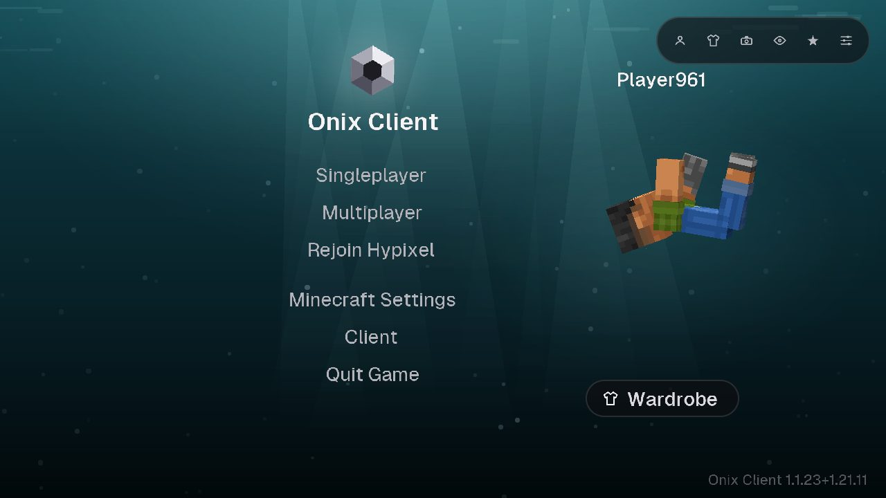
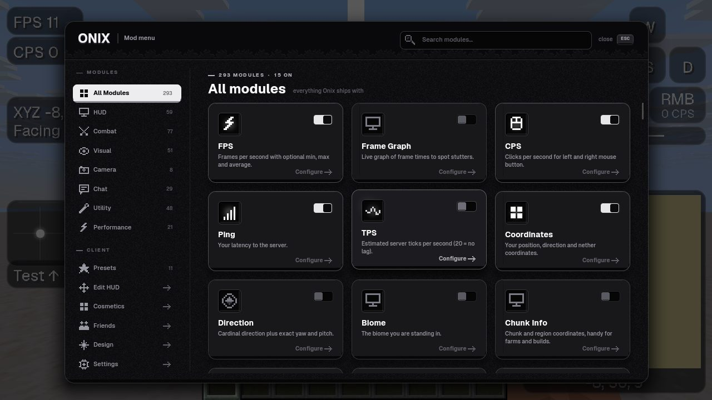
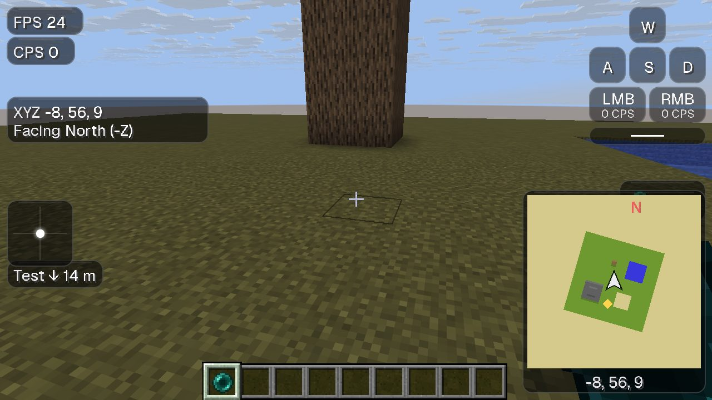
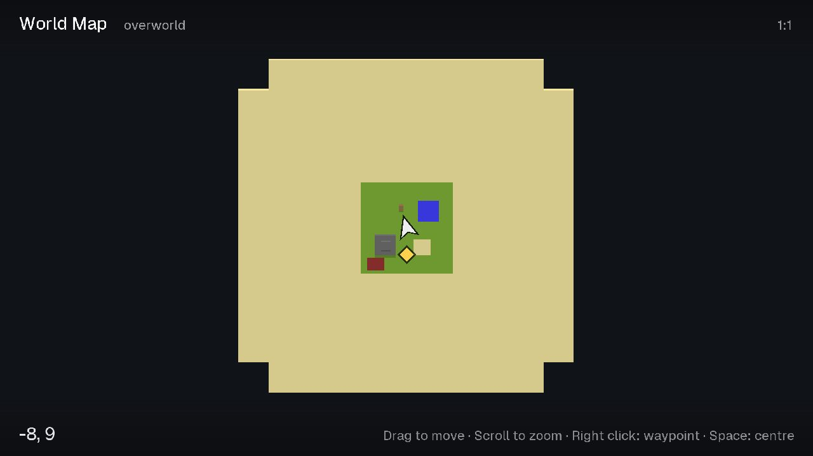
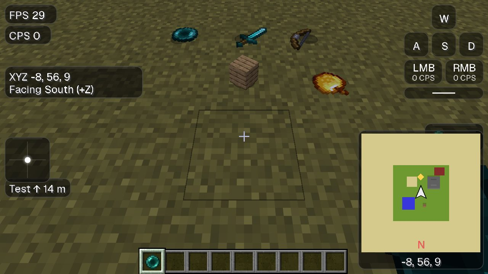
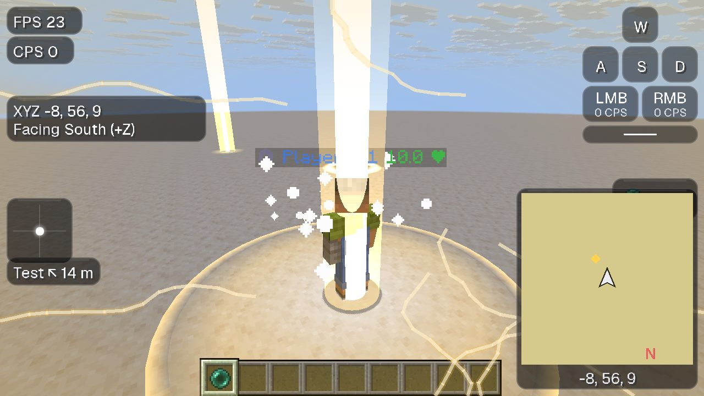
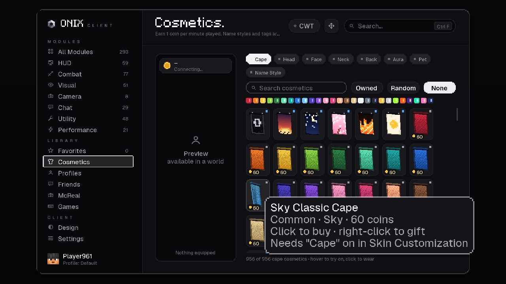
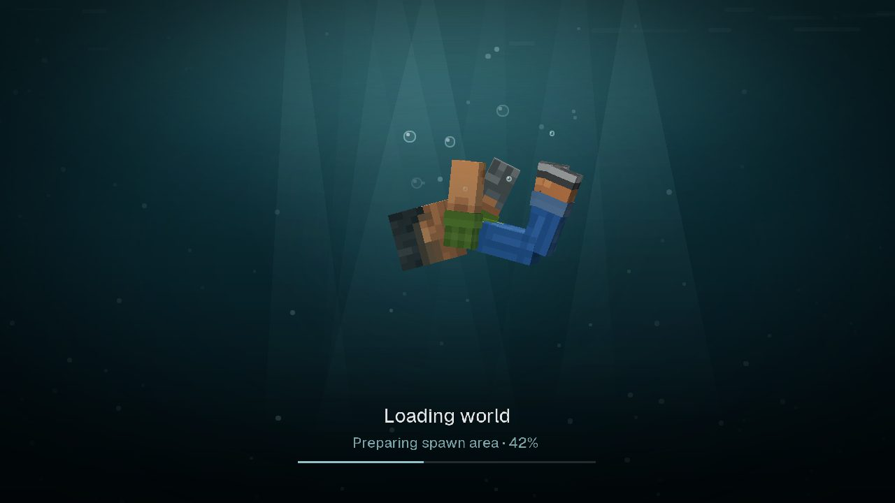
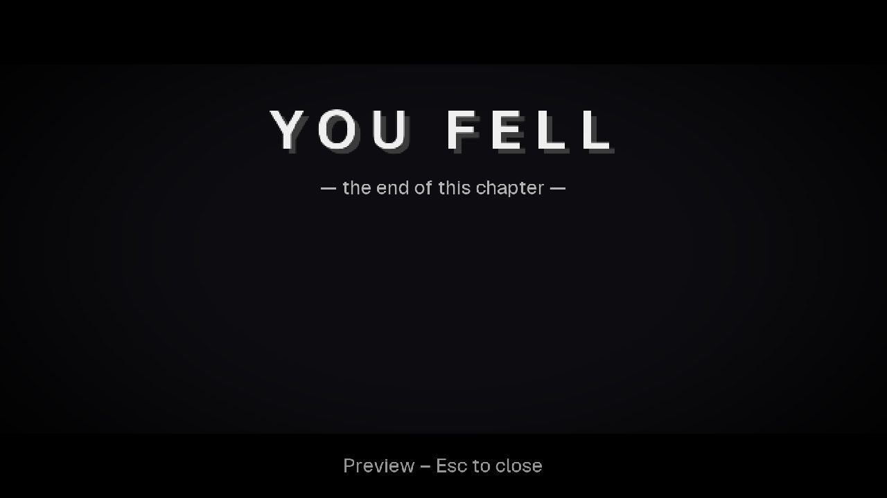

Minimap & Weltkarte
Die Umgebung von oben mit Spielern, Mobs und Wegpunkten. Taste M öffnet die große Karte von allem, was du erkundet hast.
Minecraft 1.21.1 – 1.21.11 · Fabric
Über 180 Module, Minimap und Weltkarte, Motion Blur und mehr FPS.
Für PC und Handy. Kostenlos.
Einschalten, fertig. Jedes Modul lässt sich einzeln anpassen und frei auf dem Bildschirm verschieben.
Die Umgebung von oben mit Spielern, Mobs und Wegpunkten. Taste M öffnet die große Karte von allem, was du erkundet hast.
Der Launcher installiert Sodium, Lithium und weitere Performance-Mods automatisch und hält sie aktuell.
Weiche Bewegungsunschärfe beim Umschauen, in drei Stärken – wie in PvP-Montagen.
Markiere Orte mit einer Taste. Ein Lichtstrahl zeigt sie in der Welt, die Entfernung steht im HUD.
Keystrokes, CPS, Reach, Combo, Trefferfarbe, Crosshair-Editor, Toggle Sprint und mehr – ohne Cheats.
Item-Physik, Treffer- und Kill-Effekte, Halo, Sprungringe, Todesbildschirme und eigene Himmel.
Umhänge, Hüte, Flügel und Namensstile, die andere Onix-Spieler sehen.
Strg + Klick kopiert Nachrichten, Spam wird ausgeblendet, Erwähnungen leuchten auf, Zeitstempel auf Wunsch.
Die Onix-App für Android startet Minecraft mit Onix, mit dem gleichen Launcher und Auto-Updates.
Echte Aufnahmen aus dem Spiel.









Der Launcher installiert Minecraft, Fabric, Onix und die Performance-Mods und hält alles aktuell.
Nur den Onix-Mod für Fabric? Die .jar-Dateien für jede Minecraft-Version liegen auf der Release-Seite.
Nein. Onix, der Launcher und die Android-App sind kostenlos. Du brauchst nur einen eigenen Minecraft-Account (Java Edition).
Onix enthält keine Cheats, Makros oder Aimbots – nur Anzeigen, Optik und Komfort. Halte dich trotzdem immer an die Regeln des jeweiligen Servers.
Minecraft 1.21.1 bis 1.21.11 mit Fabric (1.21.1, 1.21.4, 1.21.6, 1.21.7, 1.21.8, 1.21.10 und 1.21.11). Im Launcher wählst du die Version pro Profil.
Ja. Launcher und Handy-App suchen bei jedem Start nach einer neuen Version und installieren sie.
Ja, du kannst eigene Fabric-Mods im Launcher hinzufügen, zum Beispiel von Modrinth. Mit Essential zeigt das Onix-Hauptmenü auch dessen Freunde, Garderobe und Bilder.
Der komplette Quellcode liegt offen auf GitHub. Alle Downloads werden dort automatisch aus diesem Code gebaut.